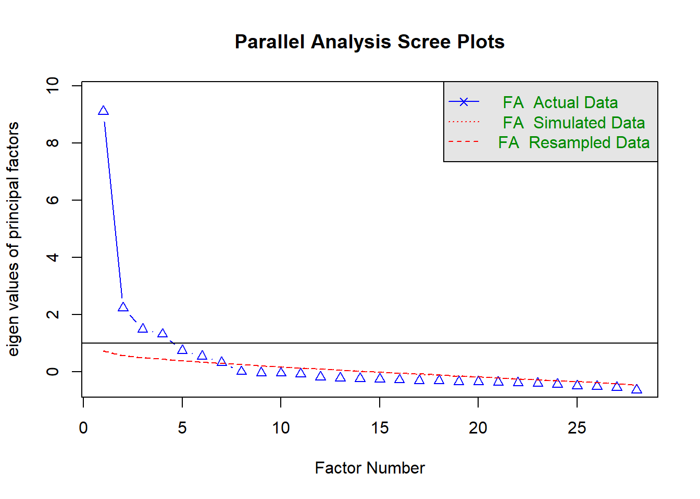

Covariance Based Structural Equation Modelling (CB-SEM)
1 Sample study
- Journal article: Young people’s perceived service quality and environmental performance of hybrid electric bus.
- Author: Zial Haque and Tehjeeb Noor
- DOI Link
- Download the dataset here.
2 Libraries
# Library
library(tidyverse)
library(readxl)
library(janitor)
library(lavaan)
library(psych)
library(MVN)
library(semTools)3 Data
## data
case_data <- read_excel("00_data/e_bus_customer_satisfaction.xlsx") %>%
clean_names()
case_data_items <- case_data %>%
select(bt1:bt7, bd1:bd4, emp1:emp5, cs1:cs3, ep1:ep4, ls1:ls5)4 Exploratory factor analysis
4.1 Scree plot
## Scree plot using parallel analysis
fa.parallel(case_data_items, fa = "fa")
Parallel analysis suggests that the number of factors = 7 and the number of components = NA 4.2 Factor extraction
## Factor loading
bus_fa <- fa(r = case_data_items,
nfactors = 6,
rotate = "varimax")
print(bus_fa$loadings, sort = TRUE, cutoff = 0.4)
Loadings:
MR2 MR1 MR3 MR4 MR6 MR5
ls1 0.820
ls2 0.891
ls3 0.828
ls4 0.806
ls5 0.599
bt1 0.673
bt2 0.666
bt4 0.549
bt5 0.680
bt6 0.578
bt7 0.550
ep1 0.864
ep2 0.900
ep3 0.690
ep4 0.705
emp1 0.688
emp2 0.662
emp3 0.636
emp4 0.697
emp5 0.502
bd1 0.679
bd2 0.640
bd3 0.676
bd4 0.629
cs1 0.774
cs2 0.817
cs3 0.768
bt3 0.476
MR2 MR1 MR3 MR4 MR6 MR5
SS loadings 3.477 3.363 3.081 2.658 2.429 2.297
Proportion Var 0.124 0.120 0.110 0.095 0.087 0.082
Cumulative Var 0.124 0.244 0.354 0.449 0.536 0.6185 Confirmatory factor analysis
5.1 Specifying the measurement model
## Specifying CFA model
cfa_model <- "tangible =~ bt1 + bt2 + bt4 + bt5 + bt6 + bt7
drivers_quality =~ bd1 + bd2 + bd3 + bd4
empathy =~ emp1 + emp2 + emp3 + emp4 + emp5
env_perf =~ ep1 + ep2 + ep3 + ep4
customer_sat =~ cs1 + cs2 + cs3
life_sat =~ ls1 + ls2 + ls3 + ls4 + ls5"5.2 Fitting the model
## Fitting CFA model
cfa_fit <- cfa(model = cfa_model,
data = case_data_items,
estimator = "MLR")
## Summary results
cfa_fit %>% summary(standardized = TRUE,
fit.measures = TRUE)lavaan 0.6.13 ended normally after 57 iterations
Estimator ML
Optimization method NLMINB
Number of model parameters 69
Number of observations 272
Model Test User Model:
Standard Scaled
Test Statistic 546.100 483.499
Degrees of freedom 309 309
P-value (Chi-square) 0.000 0.000
Scaling correction factor 1.129
Yuan-Bentler correction (Mplus variant)
Model Test Baseline Model:
Test statistic 5050.919 4114.132
Degrees of freedom 351 351
P-value 0.000 0.000
Scaling correction factor 1.228
User Model versus Baseline Model:
Comparative Fit Index (CFI) 0.950 0.954
Tucker-Lewis Index (TLI) 0.943 0.947
Robust Comparative Fit Index (CFI) 0.957
Robust Tucker-Lewis Index (TLI) 0.952
Loglikelihood and Information Criteria:
Loglikelihood user model (H0) -10679.787 -10679.787
Scaling correction factor 1.510
for the MLR correction
Loglikelihood unrestricted model (H1) -10406.737 -10406.737
Scaling correction factor 1.199
for the MLR correction
Akaike (AIC) 21497.575 21497.575
Bayesian (BIC) 21746.375 21746.375
Sample-size adjusted Bayesian (SABIC) 21527.595 21527.595
Root Mean Square Error of Approximation:
RMSEA 0.053 0.046
90 Percent confidence interval - lower 0.046 0.038
90 Percent confidence interval - upper 0.060 0.053
P-value H_0: RMSEA <= 0.050 0.236 0.839
P-value H_0: RMSEA >= 0.080 0.000 0.000
Robust RMSEA 0.048
90 Percent confidence interval - lower 0.040
90 Percent confidence interval - upper 0.057
P-value H_0: Robust RMSEA <= 0.050 0.615
P-value H_0: Robust RMSEA >= 0.080 0.000
Standardized Root Mean Square Residual:
SRMR 0.053 0.053
Parameter Estimates:
Standard errors Sandwich
Information bread Observed
Observed information based on Hessian
Latent Variables:
Estimate Std.Err z-value P(>|z|) Std.lv Std.all
tangible =~
bt1 1.000 0.913 0.699
bt2 1.022 0.081 12.634 0.000 0.932 0.696
bt4 0.983 0.098 10.003 0.000 0.897 0.655
bt5 1.070 0.102 10.542 0.000 0.977 0.691
bt6 1.126 0.120 9.354 0.000 1.028 0.717
bt7 1.138 0.128 8.890 0.000 1.039 0.694
drivers_quality =~
bd1 1.000 1.145 0.762
bd2 0.942 0.071 13.188 0.000 1.079 0.762
bd3 1.039 0.065 15.858 0.000 1.189 0.801
bd4 0.897 0.068 13.217 0.000 1.027 0.767
empathy =~
emp1 1.000 1.145 0.705
emp2 0.923 0.078 11.875 0.000 1.057 0.731
emp3 0.922 0.091 10.179 0.000 1.056 0.627
emp4 0.867 0.081 10.696 0.000 0.993 0.739
emp5 0.877 0.093 9.428 0.000 1.004 0.681
env_perf =~
ep1 1.000 1.260 0.909
ep2 1.065 0.035 30.476 0.000 1.342 0.982
ep3 0.851 0.061 13.892 0.000 1.072 0.774
ep4 0.893 0.050 17.777 0.000 1.125 0.782
customer_sat =~
cs1 1.000 1.212 0.910
cs2 1.022 0.040 25.743 0.000 1.239 0.955
cs3 1.045 0.043 24.120 0.000 1.268 0.889
life_sat =~
ls1 1.000 1.058 0.855
ls2 1.091 0.055 19.807 0.000 1.154 0.926
ls3 1.051 0.096 10.991 0.000 1.112 0.851
ls4 1.102 0.069 15.894 0.000 1.166 0.799
ls5 0.876 0.090 9.678 0.000 0.927 0.597
Covariances:
Estimate Std.Err z-value P(>|z|) Std.lv Std.all
tangible ~~
drivers_qualty 0.721 0.100 7.196 0.000 0.690 0.690
empathy 0.492 0.080 6.144 0.000 0.471 0.471
env_perf 0.596 0.097 6.166 0.000 0.518 0.518
customer_sat 0.625 0.094 6.680 0.000 0.565 0.565
life_sat 0.353 0.072 4.895 0.000 0.366 0.366
drivers_quality ~~
empathy 0.798 0.112 7.142 0.000 0.609 0.609
env_perf 0.641 0.105 6.074 0.000 0.444 0.444
customer_sat 0.789 0.112 7.041 0.000 0.568 0.568
life_sat 0.344 0.088 3.923 0.000 0.284 0.284
empathy ~~
env_perf 0.596 0.099 6.000 0.000 0.413 0.413
customer_sat 0.831 0.114 7.278 0.000 0.599 0.599
life_sat 0.316 0.098 3.239 0.001 0.261 0.261
env_perf ~~
customer_sat 0.733 0.109 6.743 0.000 0.480 0.480
life_sat 0.368 0.094 3.919 0.000 0.276 0.276
customer_sat ~~
life_sat 0.385 0.077 5.022 0.000 0.300 0.300
Variances:
Estimate Std.Err z-value P(>|z|) Std.lv Std.all
.bt1 0.870 0.126 6.918 0.000 0.870 0.511
.bt2 0.927 0.111 8.366 0.000 0.927 0.516
.bt4 1.070 0.127 8.427 0.000 1.070 0.571
.bt5 1.043 0.126 8.311 0.000 1.043 0.522
.bt6 0.999 0.112 8.904 0.000 0.999 0.486
.bt7 1.164 0.139 8.396 0.000 1.164 0.519
.bd1 0.946 0.114 8.271 0.000 0.946 0.419
.bd2 0.842 0.114 7.374 0.000 0.842 0.420
.bd3 0.791 0.103 7.659 0.000 0.791 0.359
.bd4 0.737 0.095 7.751 0.000 0.737 0.411
.emp1 1.330 0.146 9.121 0.000 1.330 0.504
.emp2 0.971 0.115 8.432 0.000 0.971 0.465
.emp3 1.722 0.180 9.574 0.000 1.722 0.607
.emp4 0.818 0.099 8.296 0.000 0.818 0.453
.emp5 1.163 0.142 8.186 0.000 1.163 0.536
.ep1 0.334 0.059 5.632 0.000 0.334 0.174
.ep2 0.068 0.043 1.566 0.117 0.068 0.036
.ep3 0.772 0.142 5.421 0.000 0.772 0.402
.ep4 0.803 0.152 5.299 0.000 0.803 0.388
.cs1 0.307 0.078 3.950 0.000 0.307 0.173
.cs2 0.148 0.041 3.631 0.000 0.148 0.088
.cs3 0.425 0.101 4.202 0.000 0.425 0.209
.ls1 0.411 0.078 5.276 0.000 0.411 0.269
.ls2 0.222 0.049 4.563 0.000 0.222 0.143
.ls3 0.472 0.125 3.786 0.000 0.472 0.276
.ls4 0.770 0.099 7.807 0.000 0.770 0.362
.ls5 1.548 0.180 8.579 0.000 1.548 0.643
tangible 0.833 0.134 6.237 0.000 1.000 1.000
drivers_qualty 1.311 0.175 7.494 0.000 1.000 1.000
empathy 1.311 0.188 6.980 0.000 1.000 1.000
env_perf 1.588 0.138 11.538 0.000 1.000 1.000
customer_sat 1.470 0.159 9.267 0.000 1.000 1.000
life_sat 1.120 0.149 7.519 0.000 1.000 1.0005.3 Relibility and validity tests
## Reliability and validity
reliability(cfa_fit) %>% round(2) tangible drivers_quality empathy env_perf customer_sat life_sat
alpha 0.85 0.86 0.82 0.92 0.94 0.90
omega 0.85 0.86 0.82 0.92 0.94 0.90
omega2 0.85 0.86 0.82 0.92 0.94 0.90
omega3 0.85 0.86 0.82 0.92 0.94 0.89
avevar 0.48 0.60 0.48 0.75 0.84 0.636 Structural equation modelling
6.1 Specifying structural model
## Specifying structural model
ebus_model <- "tangible =~ bt1 + bt2 + bt4 + bt5 + bt6 + bt7
drivers_quality =~ bd1 + bd2 + bd3 + bd4
empathy =~ emp1 + emp2 + emp3 + emp4 + emp5
env_perf =~ ep1 + ep2 + ep3 + ep4
customer_sat =~ cs1 + cs2 + cs3
life_sat =~ ls1 + ls2 + ls3 + ls4 + ls5
# structural model
customer_sat ~ tangible + drivers_quality + empathy + env_perf
life_sat ~ customer_sat"6.2 Fitting the structural model
## Fitting structural model
ebus_fit <- sem(model = ebus_model,
data = case_data,
estimator = "MLR")
## Summary results
ebus_fit %>% summary(standardized = TRUE,
fit.measures = TRUE,
rsq = TRUE)lavaan 0.6.13 ended normally after 46 iterations
Estimator ML
Optimization method NLMINB
Number of model parameters 65
Number of observations 272
Model Test User Model:
Standard Scaled
Test Statistic 561.166 496.106
Degrees of freedom 313 313
P-value (Chi-square) 0.000 0.000
Scaling correction factor 1.131
Yuan-Bentler correction (Mplus variant)
Model Test Baseline Model:
Test statistic 5050.919 4114.132
Degrees of freedom 351 351
P-value 0.000 0.000
Scaling correction factor 1.228
User Model versus Baseline Model:
Comparative Fit Index (CFI) 0.947 0.951
Tucker-Lewis Index (TLI) 0.941 0.945
Robust Comparative Fit Index (CFI) 0.955
Robust Tucker-Lewis Index (TLI) 0.950
Loglikelihood and Information Criteria:
Loglikelihood user model (H0) -10687.320 -10687.320
Scaling correction factor 1.525
for the MLR correction
Loglikelihood unrestricted model (H1) -10406.737 -10406.737
Scaling correction factor 1.199
for the MLR correction
Akaike (AIC) 21504.640 21504.640
Bayesian (BIC) 21739.017 21739.017
Sample-size adjusted Bayesian (SABIC) 21532.920 21532.920
Root Mean Square Error of Approximation:
RMSEA 0.054 0.046
90 Percent confidence interval - lower 0.047 0.039
90 Percent confidence interval - upper 0.061 0.053
P-value H_0: RMSEA <= 0.050 0.178 0.793
P-value H_0: RMSEA >= 0.080 0.000 0.000
Robust RMSEA 0.049
90 Percent confidence interval - lower 0.041
90 Percent confidence interval - upper 0.057
P-value H_0: Robust RMSEA <= 0.050 0.545
P-value H_0: Robust RMSEA >= 0.080 0.000
Standardized Root Mean Square Residual:
SRMR 0.069 0.069
Parameter Estimates:
Standard errors Sandwich
Information bread Observed
Observed information based on Hessian
Latent Variables:
Estimate Std.Err z-value P(>|z|) Std.lv Std.all
tangible =~
bt1 1.000 0.912 0.699
bt2 1.021 0.081 12.564 0.000 0.931 0.695
bt4 0.986 0.098 10.030 0.000 0.900 0.657
bt5 1.079 0.103 10.493 0.000 0.984 0.697
bt6 1.124 0.121 9.299 0.000 1.026 0.716
bt7 1.132 0.128 8.862 0.000 1.033 0.689
drivers_quality =~
bd1 1.000 1.145 0.762
bd2 0.941 0.071 13.196 0.000 1.078 0.761
bd3 1.038 0.065 15.982 0.000 1.189 0.801
bd4 0.897 0.068 13.220 0.000 1.027 0.767
empathy =~
emp1 1.000 1.144 0.704
emp2 0.922 0.078 11.823 0.000 1.055 0.730
emp3 0.923 0.091 10.159 0.000 1.056 0.627
emp4 0.870 0.080 10.805 0.000 0.995 0.741
emp5 0.878 0.093 9.403 0.000 1.004 0.681
env_perf =~
ep1 1.000 1.260 0.909
ep2 1.065 0.035 30.266 0.000 1.342 0.982
ep3 0.851 0.061 13.865 0.000 1.072 0.773
ep4 0.893 0.050 17.778 0.000 1.125 0.782
customer_sat =~
cs1 1.000 1.212 0.909
cs2 1.023 0.040 25.878 0.000 1.240 0.955
cs3 1.045 0.043 24.227 0.000 1.266 0.888
life_sat =~
ls1 1.000 1.058 0.855
ls2 1.092 0.056 19.402 0.000 1.156 0.927
ls3 1.050 0.096 10.969 0.000 1.111 0.850
ls4 1.102 0.070 15.713 0.000 1.166 0.799
ls5 0.874 0.091 9.609 0.000 0.925 0.596
Regressions:
Estimate Std.Err z-value P(>|z|) Std.lv Std.all
customer_sat ~
tangible 0.313 0.127 2.457 0.014 0.235 0.235
drivers_qualty 0.132 0.122 1.087 0.277 0.125 0.125
empathy 0.367 0.110 3.347 0.001 0.346 0.346
env_perf 0.155 0.060 2.604 0.009 0.162 0.162
life_sat ~
customer_sat 0.270 0.055 4.908 0.000 0.309 0.309
Covariances:
Estimate Std.Err z-value P(>|z|) Std.lv Std.all
tangible ~~
drivers_qualty 0.721 0.100 7.180 0.000 0.690 0.690
empathy 0.492 0.080 6.144 0.000 0.471 0.471
env_perf 0.595 0.097 6.132 0.000 0.517 0.517
drivers_quality ~~
empathy 0.798 0.112 7.139 0.000 0.609 0.609
env_perf 0.641 0.105 6.074 0.000 0.444 0.444
empathy ~~
env_perf 0.595 0.099 5.997 0.000 0.412 0.412
Variances:
Estimate Std.Err z-value P(>|z|) Std.lv Std.all
.bt1 0.870 0.125 6.942 0.000 0.870 0.511
.bt2 0.929 0.111 8.372 0.000 0.929 0.517
.bt4 1.065 0.125 8.490 0.000 1.065 0.568
.bt5 1.029 0.124 8.300 0.000 1.029 0.515
.bt6 1.002 0.114 8.809 0.000 1.002 0.488
.bt7 1.177 0.139 8.464 0.000 1.177 0.525
.bd1 0.945 0.114 8.276 0.000 0.945 0.419
.bd2 0.843 0.114 7.376 0.000 0.843 0.420
.bd3 0.792 0.103 7.675 0.000 0.792 0.359
.bd4 0.738 0.095 7.748 0.000 0.738 0.411
.emp1 1.332 0.146 9.134 0.000 1.332 0.504
.emp2 0.975 0.116 8.420 0.000 0.975 0.467
.emp3 1.721 0.180 9.566 0.000 1.721 0.607
.emp4 0.814 0.098 8.350 0.000 0.814 0.451
.emp5 1.163 0.142 8.181 0.000 1.163 0.536
.ep1 0.335 0.059 5.646 0.000 0.335 0.174
.ep2 0.066 0.043 1.518 0.129 0.066 0.035
.ep3 0.773 0.143 5.417 0.000 0.773 0.402
.ep4 0.804 0.152 5.307 0.000 0.804 0.389
.cs1 0.307 0.077 3.971 0.000 0.307 0.173
.cs2 0.148 0.040 3.713 0.000 0.148 0.088
.cs3 0.428 0.100 4.262 0.000 0.428 0.211
.ls1 0.412 0.080 5.147 0.000 0.412 0.269
.ls2 0.219 0.049 4.503 0.000 0.219 0.141
.ls3 0.475 0.125 3.815 0.000 0.475 0.278
.ls4 0.769 0.098 7.818 0.000 0.769 0.361
.ls5 1.551 0.180 8.608 0.000 1.551 0.644
tangible 0.832 0.134 6.206 0.000 1.000 1.000
drivers_qualty 1.312 0.174 7.521 0.000 1.000 1.000
empathy 1.309 0.189 6.942 0.000 1.000 1.000
env_perf 1.587 0.138 11.533 0.000 1.000 1.000
.customer_sat 0.748 0.090 8.314 0.000 0.509 0.509
.life_sat 1.012 0.143 7.089 0.000 0.904 0.904
R-Square:
Estimate
bt1 0.489
bt2 0.483
bt4 0.432
bt5 0.485
bt6 0.512
bt7 0.475
bd1 0.581
bd2 0.580
bd3 0.641
bd4 0.589
emp1 0.496
emp2 0.533
emp3 0.393
emp4 0.549
emp5 0.464
ep1 0.826
ep2 0.965
ep3 0.598
ep4 0.611
cs1 0.827
cs2 0.912
cs3 0.789
ls1 0.731
ls2 0.859
ls3 0.722
ls4 0.639
ls5 0.356
customer_sat 0.491
life_sat 0.0966.3 Estimating indirect effects
6.3.1 Specifying model with indirect effects
### SEM model with mediation
ebus_model_ie <- "tangible =~ bt1 + bt2 + bt4 + bt5 + bt6 + bt7
drivers_quality =~ bd1 + bd2 + bd3 + bd4
empathy =~ emp1 + emp2 + emp3 + emp4 + emp5
env_perf =~ ep1 + ep2 + ep3 + ep4
customer_sat =~ cs1 + cs2 + cs3
life_sat =~ ls1 + ls2 + ls3 + ls4 + ls5
# structural model
customer_sat ~ a*tangible + b*drivers_quality + c*empathy + d*env_perf
life_sat ~ e*customer_sat
# indirect effects
ie_tangible := a*e
ie_drivers_qual := b*e
ie_empathy := c*e
ie_en_perf := d*e"6.3.2 Fitting the model with indirect effects
### Fitting structural model with mediation
ebus_fit_ie <- sem(model = ebus_model_ie,
data = case_data,
estimator = "MLR")
### Summary results
ebus_fit_ie %>% summary(standardized = TRUE,
fit.measures = TRUE,
rsq = TRUE)lavaan 0.6.13 ended normally after 46 iterations
Estimator ML
Optimization method NLMINB
Number of model parameters 65
Number of observations 272
Model Test User Model:
Standard Scaled
Test Statistic 561.166 496.106
Degrees of freedom 313 313
P-value (Chi-square) 0.000 0.000
Scaling correction factor 1.131
Yuan-Bentler correction (Mplus variant)
Model Test Baseline Model:
Test statistic 5050.919 4114.132
Degrees of freedom 351 351
P-value 0.000 0.000
Scaling correction factor 1.228
User Model versus Baseline Model:
Comparative Fit Index (CFI) 0.947 0.951
Tucker-Lewis Index (TLI) 0.941 0.945
Robust Comparative Fit Index (CFI) 0.955
Robust Tucker-Lewis Index (TLI) 0.950
Loglikelihood and Information Criteria:
Loglikelihood user model (H0) -10687.320 -10687.320
Scaling correction factor 1.525
for the MLR correction
Loglikelihood unrestricted model (H1) -10406.737 -10406.737
Scaling correction factor 1.199
for the MLR correction
Akaike (AIC) 21504.640 21504.640
Bayesian (BIC) 21739.017 21739.017
Sample-size adjusted Bayesian (SABIC) 21532.920 21532.920
Root Mean Square Error of Approximation:
RMSEA 0.054 0.046
90 Percent confidence interval - lower 0.047 0.039
90 Percent confidence interval - upper 0.061 0.053
P-value H_0: RMSEA <= 0.050 0.178 0.793
P-value H_0: RMSEA >= 0.080 0.000 0.000
Robust RMSEA 0.049
90 Percent confidence interval - lower 0.041
90 Percent confidence interval - upper 0.057
P-value H_0: Robust RMSEA <= 0.050 0.545
P-value H_0: Robust RMSEA >= 0.080 0.000
Standardized Root Mean Square Residual:
SRMR 0.069 0.069
Parameter Estimates:
Standard errors Sandwich
Information bread Observed
Observed information based on Hessian
Latent Variables:
Estimate Std.Err z-value P(>|z|) Std.lv Std.all
tangible =~
bt1 1.000 0.912 0.699
bt2 1.021 0.081 12.564 0.000 0.931 0.695
bt4 0.986 0.098 10.030 0.000 0.900 0.657
bt5 1.079 0.103 10.493 0.000 0.984 0.697
bt6 1.124 0.121 9.299 0.000 1.026 0.716
bt7 1.132 0.128 8.862 0.000 1.033 0.689
drivers_quality =~
bd1 1.000 1.145 0.762
bd2 0.941 0.071 13.196 0.000 1.078 0.761
bd3 1.038 0.065 15.982 0.000 1.189 0.801
bd4 0.897 0.068 13.220 0.000 1.027 0.767
empathy =~
emp1 1.000 1.144 0.704
emp2 0.922 0.078 11.823 0.000 1.055 0.730
emp3 0.923 0.091 10.159 0.000 1.056 0.627
emp4 0.870 0.080 10.805 0.000 0.995 0.741
emp5 0.878 0.093 9.403 0.000 1.004 0.681
env_perf =~
ep1 1.000 1.260 0.909
ep2 1.065 0.035 30.266 0.000 1.342 0.982
ep3 0.851 0.061 13.865 0.000 1.072 0.773
ep4 0.893 0.050 17.778 0.000 1.125 0.782
customer_sat =~
cs1 1.000 1.212 0.909
cs2 1.023 0.040 25.878 0.000 1.240 0.955
cs3 1.045 0.043 24.227 0.000 1.266 0.888
life_sat =~
ls1 1.000 1.058 0.855
ls2 1.092 0.056 19.402 0.000 1.156 0.927
ls3 1.050 0.096 10.969 0.000 1.111 0.850
ls4 1.102 0.070 15.713 0.000 1.166 0.799
ls5 0.874 0.091 9.609 0.000 0.925 0.596
Regressions:
Estimate Std.Err z-value P(>|z|) Std.lv Std.all
customer_sat ~
tangible (a) 0.313 0.127 2.457 0.014 0.235 0.235
drvrs_qlty (b) 0.132 0.122 1.087 0.277 0.125 0.125
empathy (c) 0.367 0.110 3.347 0.001 0.346 0.346
env_perf (d) 0.155 0.060 2.604 0.009 0.162 0.162
life_sat ~
customr_st (e) 0.270 0.055 4.908 0.000 0.309 0.309
Covariances:
Estimate Std.Err z-value P(>|z|) Std.lv Std.all
tangible ~~
drivers_qualty 0.721 0.100 7.180 0.000 0.690 0.690
empathy 0.492 0.080 6.144 0.000 0.471 0.471
env_perf 0.595 0.097 6.132 0.000 0.517 0.517
drivers_quality ~~
empathy 0.798 0.112 7.139 0.000 0.609 0.609
env_perf 0.641 0.105 6.074 0.000 0.444 0.444
empathy ~~
env_perf 0.595 0.099 5.997 0.000 0.412 0.412
Variances:
Estimate Std.Err z-value P(>|z|) Std.lv Std.all
.bt1 0.870 0.125 6.942 0.000 0.870 0.511
.bt2 0.929 0.111 8.372 0.000 0.929 0.517
.bt4 1.065 0.125 8.490 0.000 1.065 0.568
.bt5 1.029 0.124 8.300 0.000 1.029 0.515
.bt6 1.002 0.114 8.809 0.000 1.002 0.488
.bt7 1.177 0.139 8.464 0.000 1.177 0.525
.bd1 0.945 0.114 8.276 0.000 0.945 0.419
.bd2 0.843 0.114 7.376 0.000 0.843 0.420
.bd3 0.792 0.103 7.675 0.000 0.792 0.359
.bd4 0.738 0.095 7.748 0.000 0.738 0.411
.emp1 1.332 0.146 9.134 0.000 1.332 0.504
.emp2 0.975 0.116 8.420 0.000 0.975 0.467
.emp3 1.721 0.180 9.566 0.000 1.721 0.607
.emp4 0.814 0.098 8.350 0.000 0.814 0.451
.emp5 1.163 0.142 8.181 0.000 1.163 0.536
.ep1 0.335 0.059 5.646 0.000 0.335 0.174
.ep2 0.066 0.043 1.518 0.129 0.066 0.035
.ep3 0.773 0.143 5.417 0.000 0.773 0.402
.ep4 0.804 0.152 5.307 0.000 0.804 0.389
.cs1 0.307 0.077 3.971 0.000 0.307 0.173
.cs2 0.148 0.040 3.713 0.000 0.148 0.088
.cs3 0.428 0.100 4.262 0.000 0.428 0.211
.ls1 0.412 0.080 5.147 0.000 0.412 0.269
.ls2 0.219 0.049 4.503 0.000 0.219 0.141
.ls3 0.475 0.125 3.815 0.000 0.475 0.278
.ls4 0.769 0.098 7.818 0.000 0.769 0.361
.ls5 1.551 0.180 8.608 0.000 1.551 0.644
tangible 0.832 0.134 6.206 0.000 1.000 1.000
drivers_qualty 1.312 0.174 7.521 0.000 1.000 1.000
empathy 1.309 0.189 6.942 0.000 1.000 1.000
env_perf 1.587 0.138 11.533 0.000 1.000 1.000
.customer_sat 0.748 0.090 8.314 0.000 0.509 0.509
.life_sat 1.012 0.143 7.089 0.000 0.904 0.904
R-Square:
Estimate
bt1 0.489
bt2 0.483
bt4 0.432
bt5 0.485
bt6 0.512
bt7 0.475
bd1 0.581
bd2 0.580
bd3 0.641
bd4 0.589
emp1 0.496
emp2 0.533
emp3 0.393
emp4 0.549
emp5 0.464
ep1 0.826
ep2 0.965
ep3 0.598
ep4 0.611
cs1 0.827
cs2 0.912
cs3 0.789
ls1 0.731
ls2 0.859
ls3 0.722
ls4 0.639
ls5 0.356
customer_sat 0.491
life_sat 0.096
Defined Parameters:
Estimate Std.Err z-value P(>|z|) Std.lv Std.all
ie_tangible 0.084 0.039 2.144 0.032 0.073 0.073
ie_drivers_qul 0.036 0.034 1.058 0.290 0.039 0.039
ie_empathy 0.099 0.032 3.051 0.002 0.107 0.107
ie_en_perf 0.042 0.018 2.292 0.022 0.050 0.050